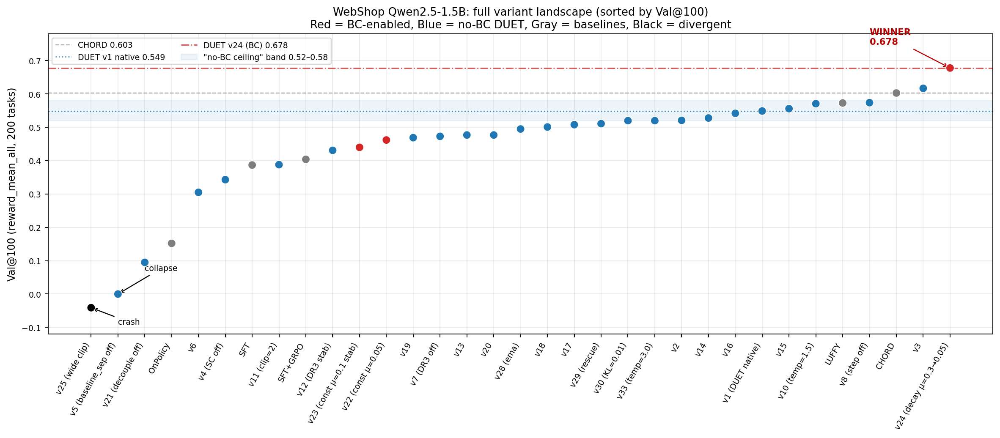
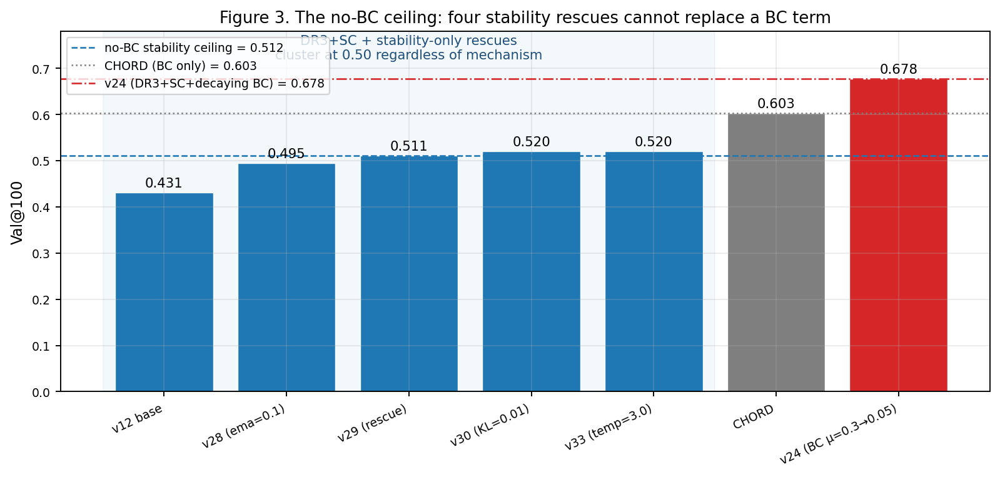
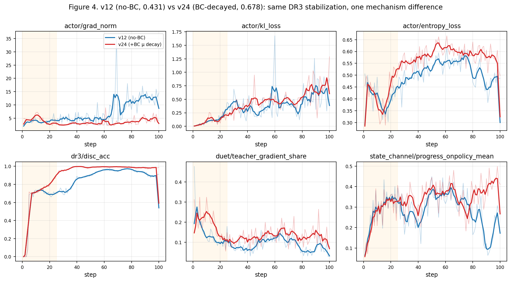
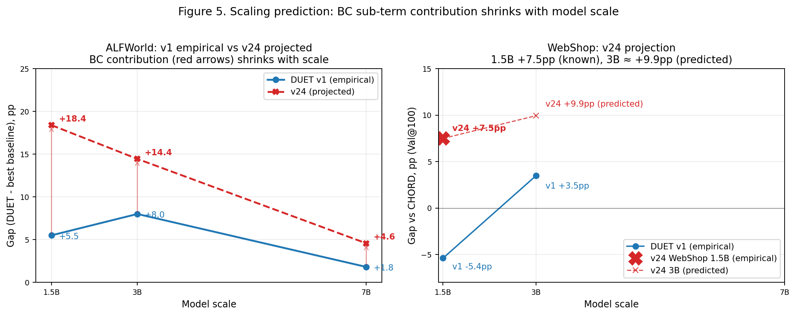

WebShop 1.5B 上 DUET-v1 输给 CHORD（0.549 vs 0.603），我们 24 轮 ablation 后找到 v24（DUET + 衰减 BC），0.678，反超 CHORD +7.5pp。
今天要讲清楚：为什么 CHORD 比原 DUET 强？为什么 v24 work？能不能保住 dual-channel 叙事？

无 BC 的变体（蓝）全部聚在 0.45-0.58 区；含 BC 的变体（红）里只有 v24 独峰 0.678。BC 与否决定了天花板。
→ 梯度几何的第一性原理
→ BC 的三个不可替代的性质 + 4 个 rescue 失败
→ Action Channel = gradient operator curriculum
$L_\text{BC} = -\mu \cdot \log \pi_\theta(a^*|s)$
对 logit 梯度：
$\Delta z(a^*) = \mu \cdot (1 - \pi_\theta)$
$L_\text{DR3} = -A(\tau) \cdot \text{clip}(w_\text{hat} \cdot \pi_\theta)$
对 logit 梯度：
$\Delta z(a^*) = A \cdot w_\text{hat} \cdot \pi_\theta(1 - \pi_\theta)$
决定性差异不在 clip（`off_pg_cliphit_rate=0` 全程）而在 (1-p) vs p(1-p) 的系数几何。
场景：WebShop 产品详情页，teacher 点 click[bright white]，刚开始训练时 $\pi_\theta = 10^{-4}$。
| 方法 | 每步 Δz | 10 步后 p_θ | 100 步后 p_θ |
|---|---|---|---|
| CHORD (BC, μ=0.9) | 0.9 | ≈ 0.4 | ≈ 1.0 |
| DR3 (clip 未触发) | 10⁻⁴ | 基本没动 | 基本没动 |
| DR3 (PPO clip 触发) | +20% (相对) | 6×10⁻⁴ | ≈ 1.0 |
梯度推力差 4 个数量级。CHORD 10 步解决的问题，DR3 要在 PPO 限速下爬 100+ 步。
200 个匹配的 validation 任务，@step 100：
| 变体 | 任意 option 点击 | Teacher-exact option | 长轨死循环 |
|---|---|---|---|
| DUET-v1 | 39.5% | 33.0% | 8/200 |
| CHORD | 92.0% | 72.5% | 16/200 |
| v24 | 78.0% | 61.0% | 0/200 |
40pp 的 option 能力差 正好解释 CHORD vs DUET-v1 的 5.4pp val reward 差。
v24 继承 CHORD 的 option 能力，还消除了 CHORD 的 option-loop 死循环（16 → 0）。
| 性质 | BC | DR3 | KL→ref | EMA / soft disc |
|---|---|---|---|---|
| Teacher-specific loss 锚点在 teacher 数据 |
✓ | ✓ | ✗ 锚 ref | ✗ |
| Per-token surprise 梯度 ∝ (1-p) 而非 p(1-p) |
✓ | ✗ | ✓ | ✗ |
| Unconditional 正号 不依赖 A 或 reward |
✓ | 仅 A>0 | 仅偏 ref 时 | ✗ |
只有 BC 三者全占。KL 有 per-token + unconditional，但 anchor 到 pretrained，不是 teacher —— 稳定但不教 teacher-specific token。
| 变体 | 改了什么 | 数学意义 | Val@100 |
|---|---|---|---|
| v28 | w_hat_ema_alpha: 0.3→0.1 | w_hat 方差 ↓ | 0.495 |
| v29 | 组合（宽 clip + ema + clip_max） | 三管齐下 | 0.511 |
| v30 | kl_loss_coef: 0.001→0.01 | KL penalty ×10 | 0.520 |
| v33 | disc_temperature: 1.5→3.0 | 判别器软化 | 0.520 |
| 参考：v12 baseline (无 BC) | DR3 稳定化 | 0.431 | |
| 参考：CHORD | 有 BC (μ=0.9) | 0.603 | |
| v24 = v12 + 衰减 BC | 有 BC (μ=0.3→0.05) | 0.678 | |
4 种独立机制 (EMA / 宽 clip / 强 KL / 软 disc) 全部卡在 0.49-0.52，这是**经验上非常硬的 ceiling**。

4 个不含 BC 的 rescue 变体 + v12 baseline 全部在地板附近（0.43-0.52）；只有加 BC 的 v24 独高一头 (0.678)。这是"BC 不可替代"的最硬证据。

v12 (蓝) 后期 grad_norm 飙到 12+、entropy 塌到 0.15、SC progress 从 0.35 跌到 0.22。v24 (红) 全程稳定 —— BC 既教 teacher token，又锚语法 token（μ_valley=0.05 的第二角色）。
v25 实验：去掉 BC + 放宽 PPO clip (0.6→2.0)。
<action> 标签<search>, <story>, <when><when result="..."> XML 树
没有 BC 持续锚 <action> 等低概率语法 token，PPO 会慢慢漂掉语法 logit，一旦语法破，后面雪崩。v24 的 μ_valley=0.05 就是这个 floor。

| 环境×规模 | Rare-token | Format fragility | Capacity | 预测 v24 gain |
|---|---|---|---|---|
| WebShop 1.5B | 高 | 中 | 低 | +12.9pp ✓ 已验证 |
| WebShop 3B/7B | 高 | 中 | 中-高 | +1~5pp |
| ALFWorld 1.5B | 低 (模板) | 低 | 低 | +0~3pp ⚠ 待验证 |
| ALFWorld 3B/7B | 低 | 低 | 中-高 | ≈ 0 |
$L_\text{action} = \mu_t \cdot L_\text{BC} + L_\text{DR3}$
μ_t: 0.3 → 0.05 over 25 steps — the curriculum$L_\text{SC} = \beta \cdot \Phi(\tau) \cdot \nabla \log \pi_\theta$
Novelty 在 density-ratio 驱动的自动 curriculum：w_hat → 1 时 DR3 自动退出，这是 CHORD 的人工 μ schedule 做不到的。
| 质疑 | 我们的回答 |
|---|---|
| R1: 不就是 CHORD + DR3 吗？ | CHORD 没 trajectory credit，没自动 fade。v22/v23 (const μ) 全部失败，证明衰减是必要的。 |
| R2: BC 已必要，还要 SC 吗？ | 正交作用。v4 (SC off) = 0.343 硬证据。 |
| R3: WebShop-only hack 吗？ | BC 价值随 rare-token gap 变化；ALFWorld 预测 gain ≈ 0。待 v24 on ALFWorld 1.5B 验证。 |
| R4: AWAC single-operator baseline？ | 诚实披露：没跑。降级为"两算子独立分析"，作为 future work。 |
v24 recipe on ALFWorld 1.5B · 预计 ~5h · 单个实验决定叙事成败
框架成立；BC curriculum 在不需要时自动熄火；通用 contribution。
回到 Framing F+H：承认 BC 是 WebShop-specific。
次优先：AWAC baseline (R4 防御) · 3B CHORD ALFWorld 重跑 · Round 4B 剩余 v36/v31/v32
BC：$\Delta z(a^*) = \mu \cdot (1 - \pi_\theta)$ · per-token, unconditional
DR3：$\Delta z(a^*) = A(\tau) \cdot w_\text{hat} \cdot \pi_\theta(1 - \pi_\theta)$ · seq-level, conditional
BC：0.9 · DR3 (unclipped)：10⁻⁴ · DR3 (clipped)：+20% 相对
v28 (EMA)=0.495 · v29 (combined)=0.511 · v30 (KL×10)=0.520 · v33 (soft disc)=0.520 · v24=0.678
DUET-v1: 33% · CHORD: 72.5% · v24: 61% (但死循环 0/200 vs CHORD 16/200)